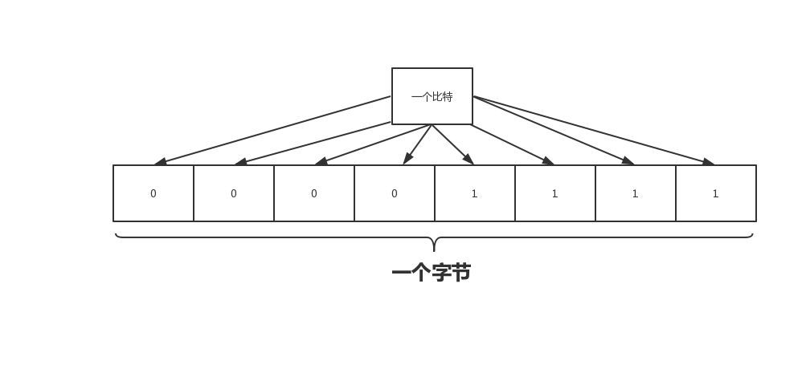
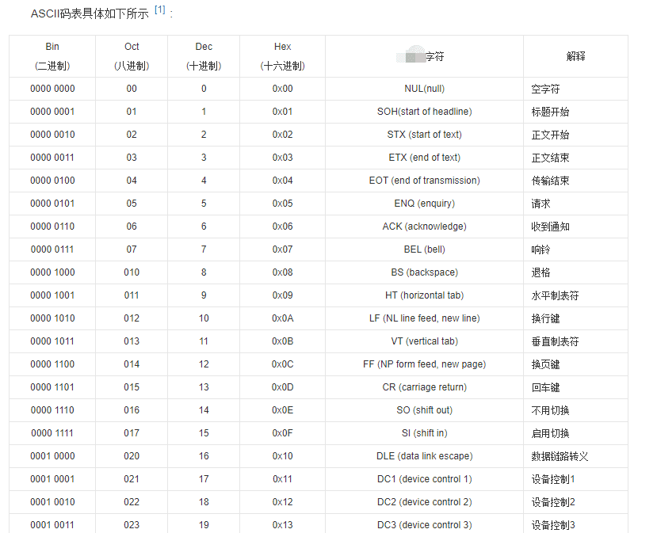
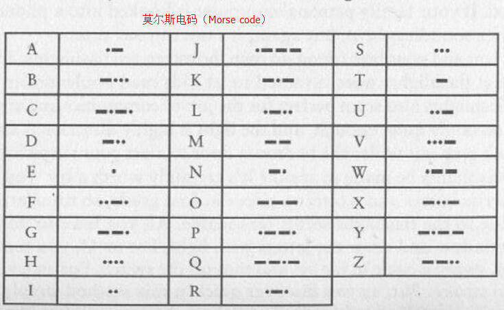
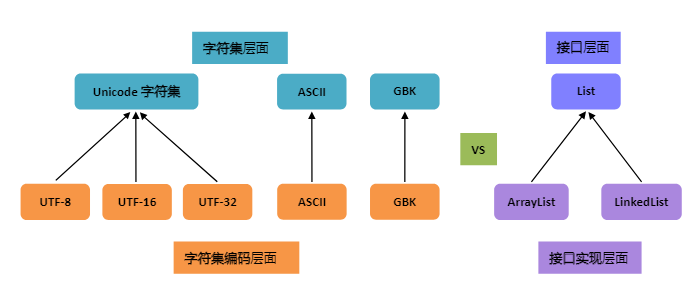

原文连接:https://www.cnblogs.com/qiaogeli/p/12046731.html
前情回顾：Java中一个字符占两字节 但为什么new String("字").getBytes().length 返回3个字节
今天主要聊一聊：
- 字节
- 字符
- 字符集
- 编码
- 字符编码
- Java 内码和外码
- Unicode
字节
例如 ：00001111 这个8位二进制数就占了一个字节的存储容量。
字节（英语：Byte），通常用作计算机信息计量单位，不分数据类型。 一个字节代表八个比特（英语：Bit）。这个是最基本的概念了，字节是计算存储容量的一种计量单位，计算机只能识别1和0组成的二进制位。一个数就是1位（bit），为了方便计算，我们规定8位就是一个字节。
例如 ：00001111 这个8位二进制数就占了一个字节的存储容量。

字符
字符和字节不太一样，任何一个文字或符号都是一个字符，但所占字节不一定，不同的编码导致一个字符所占的内存不同。字符是各种文字和符号的总称，包括各国家文字、标点符号、图形符号、数字等。 也就是说，一个数字是一个字符，一个文字是一个字符，一个标点符号也是一个字符。
1 是 字符，“汉” 是字符，“！”感叹号是字符。
字符集
charset 是 character set 的简写，即字符集。字符的集合就叫字符集。ASCII字符集就是下表中的字符那一列的所有字符的集合。

编码
编码是一个非常宽泛的概念！虽然我们一直用编码特指字符集编码，但这只是一种狭义的理解，广义的理解则有很多：
- 文字是对声音的编码
- 照相机，摄像机把光信号编码成图像及视频
- 我们还经常能看到条形码，二维码，这些都是编码
著名的摩尔斯电码其实也是一种编码：

在图片中，M的编码就是“━ ━”，其它类似。
字符编码 是 编码的一种情况，不过我们学计算机的说到编码就是字符编码。
字符编码
encoding 是 charset encoding 的简写，即字符集编码，简称编码。定义字符集中的字符如何编码为特定的二进制数，以便在计算机中存储（就是将字符在字符集中的对应位置化为二进制）。
字符集和字符编码一般一 一对应，Unicode字符集例外，因为Unicode字符集有三种编码方式（utf-8,utf-16,utf-32）
字符编码 和 字符集的区别
与接口及接口实现的对比
可以把这两者与接口及接口实现做个对比：

从这里可以很清楚地看到，
- 编码是依赖于字符集的，就像代码中的接口实现依赖于接口一样；
- 一个字符集可以有多个编码实现，就像一个接口可以有多个实现类一样。
Java中 内码和外码
简单来说
- 内码：char或String在内存里使用的编码方式。
- 外码：除了内码都可以认为是“外码”。（包括class文件的编码）
java内码：unicode（utf-16）
jvm默认外码：
- windows——gbk
- Linux——utf-8
为什么Unicode这么特殊？
人们弄出新的字符集标准，驱动力无外乎是旧的字符集里的字符不够用了。
Unicode 的目标是统一所有的字符集，囊括所有的字符，粗略估算为 17×6万=102 万,所以字符集发展到它这里就到头了，再去整什么新的字符集就没必要也不应该了,102万目前已经完全够用了。
但如果觉得它现有的编码方案不太好呢？在不能弄出新的字符集情况下，只能在编码方面做文章了，于是就有了多个实现，这样一来传统的一一对应关系就打破了。
比如说UTF-32编码，哪怕是00000000 00000000 00000000 00001111这种其实只占了1个字节的字符，我们也要为他分配4个字节的空间，这就导致一个可以用1G保存的文件，现在需要4G才能保存，这是极其浪费的做法。
于是某位大牛觉得UTF-32编码太浪费空间了吧，于是大牛就做出了UTF-8、UTF-16编码方案（这里就是举个例子，可能大牛就是搞出来玩，具体原因无从考究）
参考
- https://baike.baidu.com/item/ASCII/309296?fr=aladdin
- https://www.cnblogs.com/Xieyang-blog/p/9401999.html
- https://blog.csdn.net/qq_42068856/article/details/83792174
- https://wikipedia.hk.wjbk.site/
- https://xiaogd.net/
- https://blog.csdn.net/zhongguomao/article/details/54405637
本文首发于微信公众号：程序员乔戈里
如果是头条用户，可以在我的头条号程序员乔戈里后台回复 资源获取价值59998元的编程和考研资料
觉得文章不错的欢迎关注我的WX公众号：程序员乔戈里
我是BAT大厂后台开发工程师，，专注分享技术干货/编程资源/求职面试/成长感悟等,关注送5000G编程资源和自己整理的一份帮助不少人拿下java的offer的面经附答案，免费下载CSDN资源。